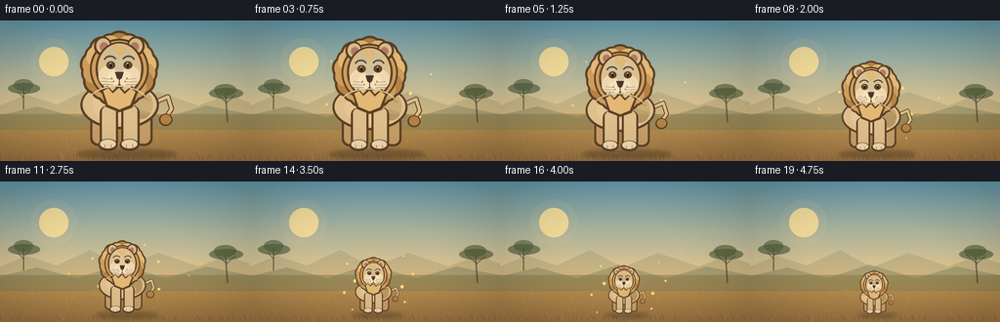
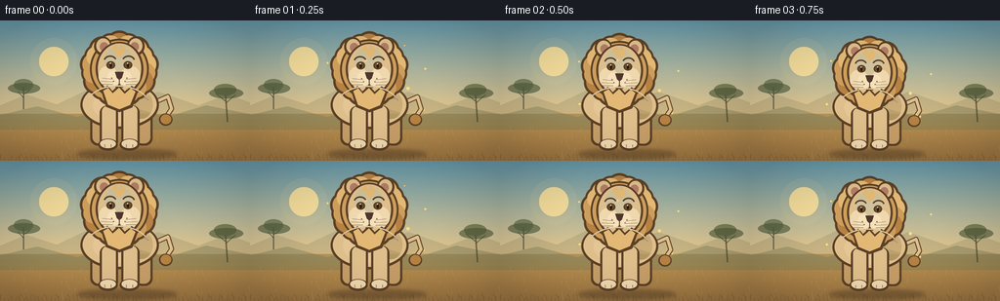

CODING AGENTS AS PIXEL WORLD MODELS
traex/GPT-5.6-Sol · instance_preservation_0052
点击播放 · 原生 RGB 像素
逐轮保存的候选
回放视频、检查图与代码变化。
每份候选均可单独播放。实际图片检查记录在下方工具轨迹中。
候选 01播放与检查图
点击播放 · 原生 RGB 像素


展开代码变化
--- 上一保存版本
+++ 本次保存版本
@@ -0,0 +1,226 @@
+from pathlib import Path
+import json, math
+import numpy as np
+from PIL import Image, ImageDraw, ImageFilter
+import artifact_io
+
+CASE_DIR = Path(__file__).resolve().parent
+SPEC = json.loads((CASE_DIR / 'task_spec.json').read_text())
+W, H, N = SPEC['width'], SPEC['height'], SPEC['frames']
+SS = 4
+rng = np.random.default_rng(5201)
+
+def sc(v):
+ if isinstance(v, (tuple, list)):
+ return tuple(int(round(x * SS)) for x in v)
+ return int(round(v * SS))
+
+def make_background():
+ """Warm, static, softly textured savanna background at 4x resolution."""
+ w, h = W*SS, H*SS
+ yy = np.linspace(0, 1, h)[:, None, None]
+ top = np.array([99, 151, 169], float)[None,None,:]
+ horizon = np.array([239, 203, 140], float)[None,None,:]
+ ground = np.array([156, 116, 66], float)[None,None,:]
+ sky_t = np.minimum(yy / .70, 1)
+ arr = top*(1-sky_t) + horizon*sky_t
+ arr = np.repeat(arr, w, axis=1)
+ ground_mask = np.arange(h)[:,None] >= int(h*.665)
+ gy = np.clip((np.arange(h)[:,None,None]/h-.665)/.335, 0, 1)
+ gcol = np.array([190,150,83.],float)*(1-gy) + ground*gy
+ gcol = np.repeat(gcol, w, axis=1)
+ arr = np.where(ground_mask[:,:,None], gcol, arr)
+ # Fine paper-like texture is static, so the lion remains the only principal change.
+ noise = rng.normal(0, 1.5, (h,w,1))
+ arr = np.clip(arr + noise, 0, 255).astype(np.uint8)
+ im = Image.fromarray(arr, 'RGB')
+ d = ImageDraw.Draw(im, 'RGBA')
+ # sun and glow
+ d.ellipse(sc((31,18,79,66)), fill=(255,220,145,20))
+ d.ellipse(sc((40,27,70,57)), fill=(255,225,151,205))
+ # distant haze/hills
+ d.polygon([sc((0,87)),sc((27,76)),sc((58,86)),sc((92,70)),sc((125,88)),sc((162,73)),sc((203,87)),sc((233,76)),sc((256,84)),sc((256,105)),sc((0,105))], fill=(150,142,105,85))
+ d.polygon([sc((0,97)),sc((38,88)),sc((79,99)),sc((122,85)),sc((170,99)),sc((211,87)),sc((256,96)),sc((256,112)),sc((0,112))], fill=(119,123,88,105))
+ # Tiny distant acacia at left
+ trunk=(74,71,48,185)
+ d.line([sc((24,91)),sc((24,68))], fill=trunk, width=sc(1.2))
+ d.line([sc((24,79)),sc((18,73))], fill=trunk, width=sc(.8))
+ d.line([sc((24,76)),sc((31,71))], fill=trunk, width=sc(.8))
+ d.ellipse(sc((8,64,41,75)), fill=(69,83,54,155))
+ d.ellipse(sc((14,60,34,72)), fill=(77,92,57,155))
+ # right tree, positioned away from the centered subject
+ d.line([sc((233,104)),sc((231,77))], fill=(70,62,40,170), width=sc(1.6))
+ d.line([sc((231,83)),sc((221,75))], fill=(70,62,40,170), width=sc(.9))
+ d.line([sc((231,85)),sc((241,76))], fill=(70,62,40,170), width=sc(.9))
+ d.ellipse(sc((214,69,249,80)), fill=(66,78,48,150))
+ d.ellipse(sc((219,65,242,77)), fill=(74,86,49,155))
+ # foreground grass silhouettes
+ for x in range(0, W, 4):
+ height = int(rng.integers(2,8))
+ col=(85,75,42,int(rng.integers(85,145)))
+ d.line([sc((x,144)), sc((x+rng.uniform(-2,2),144-height))], fill=col, width=sc(.55))
+ if x % 12 == 0:
+ d.line([sc((x,141)),sc((x-3,137))], fill=col, width=sc(.45))
+ # light dry grass strokes behind the lion
+ for _ in range(60):
+ x=float(rng.uniform(0,W)); y=float(rng.uniform(108,141)); hh=float(rng.uniform(2,7))
+ d.line([sc((x,y+hh)),sc((x+rng.uniform(-1.5,1.5),y))], fill=(219,182,100,65), width=sc(.45))
+ return im
+
+def make_lion_sprite():
+ """A single detailed, warm-beige lion. It is resized as one immutable sprite."""
+ S=3
+ cw,ch=420*S,430*S
+ im=Image.new('RGBA',(cw,ch),(0,0,0,0))
+ d=ImageDraw.Draw(im,'RGBA')
+ def q(v):
+ if isinstance(v,(tuple,list)): return tuple(int(round(a*S)) for a in v)
+ return int(round(v*S))
+ outline=(91,64,39,255)
+ mane_dark=(181,130,68,255)
+ mane=(205,157,91,255)
+ mane_light=(226,184,116,255)
+ fur=(222,190,139,255)
+ fur_hi=(239,216,174,255)
+ fur_shade=(197,157,103,255)
+ # tail, behind body
+ d.line([q((309,264)),q((358,242)),q((370,281)),q((350,311))],fill=outline,width=q(16),joint='curve')
+ d.line([q((309,264)),q((358,242)),q((370,281)),q((350,311))],fill=fur,width=q(10),joint='curve')
+ d.ellipse(q((330,296,373,335)),fill=outline)
+ d.ellipse(q((335,299,369,330)),fill=mane_dark)
+ # back legs, body, chest
+ d.rounded_rectangle(q((113,269,174,398)),radius=q(24),fill=outline)
+ d.rounded_rectangle(q((120,269,168,391)),radius=q(20),fill=fur_shade)
+ d.rounded_rectangle(q((252,268,310,398)),radius=q(24),fill=outline)
+ d.rounded_rectangle(q((258,271,303,391)),radius=q(19),fill=fur_shade)
+ d.ellipse(q((82,192,330,345)),fill=outline)
+ d.ellipse(q((89,198,323,337)),fill=fur)
+ d.ellipse(q((121,213,294,326)),fill=(228,197,147,255))
+ # warm flank shading and a few identifying fur marks
+ d.ellipse(q((238,222,311,313)),fill=(207,166,109,125))
+ d.arc(q((238,232,294,286)),190,325,fill=(159,116,72,180),width=q(3))
+ d.arc(q((253,245,306,300)),185,315,fill=(159,116,72,145),width=q(3))
+ # front legs remain visibly distinct
+ for box in [(143,271,201,407),(211,270,269,407)]:
+ d.rounded_rectangle(q(box),radius=q(23),fill=outline)
+ b=(box[0]+7,box[1]+1,box[2]-7,box[3]-8)
+ d.rounded_rectangle(q(b),radius=q(18),fill=fur)
+ # paws and toes
+ for cx in (169,237):
+ d.ellipse(q((cx-31,376,cx+31,414)),fill=outline)
+ d.ellipse(q((cx-25,378,cx+25,406)),fill=fur_hi)
+ for dx in (-10,10): d.line([q((cx+dx,394)),q((cx+dx,403))],fill=(142,101,66,210),width=q(2))
+ # mane scallops arranged as a stable halo
+ cx,cy=205,154
+ for i in range(18):
+ a=2*math.pi*i/18-math.pi/2
+ rx=cx+math.cos(a)*84; ry=cy+math.sin(a)*79
+ rr=42 if i%2==0 else 38
+ d.ellipse(q((rx-rr,ry-rr,rx+rr,ry+rr)),fill=outline)
+ for i in range(18):
+ a=2*math.pi*i/18-math.pi/2
+ rx=cx+math.cos(a)*82; ry=cy+math.sin(a)*77
+ rr=36 if i%2==0 else 33
+ color=mane_light if i in (1,2,3,4,15,16,17) else (mane if i%3 else mane_dark)
+ d.ellipse(q((rx-rr,ry-rr,rx+rr,ry+rr)),fill=color)
+ # inner mane for layered depth
+ d.ellipse(q((112,59,298,251)),fill=outline)
+ d.ellipse(q((118,65,292,245)),fill=mane)
+ # ears, outlined and pink inside
+ d.ellipse(q((125,52,181,113)),fill=outline); d.ellipse(q((132,58,176,105)),fill=fur)
+ d.ellipse(q((229,52,285,113)),fill=outline); d.ellipse(q((235,58,278,105)),fill=fur)
+ d.ellipse(q((143,70,170,99)),fill=(179,125,103,255)); d.ellipse(q((240,70,267,99)),fill=(179,125,103,255))
+ # face
+ d.ellipse(q((130,69,281,240)),fill=outline)
+ d.ellipse(q((137,74,274,234)),fill=fur)
+ # forehead and cheek lighting
+ d.ellipse(q((157,85,249,170)),fill=(232,204,158,165))
+ d.ellipse(q((139,145,199,210)),fill=fur_hi)
+ d.ellipse(q((211,145,271,210)),fill=fur_hi)
+ # characteristic brow tufts
+ d.polygon([q((181,91)),q((195,73)),q((202,98)),q((211,75)),q((225,98)),q((207,121))],fill=mane_light)
+ # eyebrows
+ d.arc(q((155,112,197,147)),195,338,fill=outline,width=q(5))
+ d.arc(q((213,112,255,147)),202,345,fill=outline,width=q(5))
+ # eyes with amber iris and catchlight
+ for ex in (178,232):
+ d.ellipse(q((ex-14,130,ex+14,155)),fill=outline)
+ d.ellipse(q((ex-8,134,ex+8,151)),fill=(126,85,40,255))
+ d.ellipse(q((ex-4,136,ex+4,151)),fill=(35,29,23,255))
+ d.ellipse(q((ex-3,135,ex+1,139)),fill=(255,247,217,255))
+ # muzzle, nose, mouth
+ d.ellipse(q((166,161,210,207)),fill=(246,225,187,255))
+ d.ellipse(q((200,161,244,207)),fill=(246,225,187,255))
+ d.polygon([q((191,164)),q((219,164)),q((213,183)),q((205,190)),q((197,183))],fill=(77,54,42,255))
+ d.line([q((205,188)),q((205,205))],fill=outline,width=q(3))
+ d.arc(q((182,188,205,214)),5,92,fill=outline,width=q(3))
+ d.arc(q((205,188,228,214)),88,175,fill=outline,width=q(3))
+ # whisker dots + whiskers
+ for x,y in [(181,184),(187,194),(229,184),(223,194)]: d.ellipse(q((x-2,y-2,x+2,y+2)),fill=(114,79,55,220))
+ for side in (-1,1):
+ sx=185 if side<0 else 225
+ for j in range(3):
+ yy=188+j*8
+ d.line([q((sx,yy)),q((sx+side*(34+j*4),yy-4+j*2))],fill=(106,77,53,205),width=q(1.4))
+ # chest ruff overlaps torso and connects face/body
+ d.polygon([q((147,221)),q((168,207)),q((183,225)),q((204,205)),q((222,226)),q((244,208)),q((264,225)),q((246,277)),q((205,292)),q((163,275))],fill=outline)
+ d.polygon([q((154,224)),q((170,215)),q((184,232)),q((204,214)),q((222,234)),q((241,216)),q((256,227)),q((239,269)),q((205,283)),q((169,268))],fill=mane_light)
+ # subtle body highlights
+ d.arc(q((100,207,300,331)),205,332,fill=(244,219,171,120),width=q(4))
+ # Crop only transparent outer margin while retaining fixed geometry.
+ bbox=im.getbbox()
+ return im.crop((max(0,bbox[0]-10*S),max(0,bbox[1]-10*S),min(cw,bbox[2]+10*S),min(ch,bbox[3]+10*S)))
+
+BG = make_background()
+LION = make_lion_sprite()
+
+def ease(t):
+ # smoothstep gives a readable hold-like beginning/end without stopping motion
+ return t*t*(3-2*t)
+
+frames=[]
+for i in range(N):
+ t=i/(N-1)
+ e=ease(t)
+ # Lion changes from almost full-height to clearly small; exact same sprite throughout.
+ lion_h=int(round((130*(1-e) + 47*e)*SS))
+ lion_w=int(round(LION.width/LION.height*lion_h))
+ frame=BG.copy().convert('RGBA')
+ dr=ImageDraw.Draw(frame,'RGBA')
+ anchor_x=130*SS
+ ground_y=137*SS
+ # contact shadow changes in concert with the animal's physical size
+ ratio=lion_h/(130*SS)
+ sw=int((94*ratio+8)*SS); sh=int((8*ratio+2)*SS)
+ shadow=Image.new('RGBA',frame.size,(0,0,0,0)); sd=ImageDraw.Draw(shadow,'RGBA')
+ sd.ellipse((anchor_x-sw//2,ground_y-sh//2,anchor_x+sw//2,ground_y+sh//2),fill=(61,46,29,int(72+25*ratio)))
+ shadow=shadow.filter(ImageFilter.GaussianBlur(max(1,int(2.2*SS))))
+ frame=Image.alpha_composite(frame,shadow)
+ # quiet golden motes around the shrinking lion during the transformation
+ md=ImageDraw.Draw(frame,'RGBA')
+ if 0 < i < N-1:
+ for k in range(10):
+ phase=(k*0.618 + t*0.72)%1
+ ang=2*math.pi*(k/10 + t*.18)
+ rad=(30+48*phase)*(0.55+0.45*ratio)
+ mx=anchor_x/SS+math.cos(ang)*rad
+ my=ground_y/SS-lion_h/SS*.53+math.sin(ang)*rad*.60
+ r=0.6+1.15*(1-phase)
+ alpha=int(25+85*math.sin(math.pi*phase))
+ md.ellipse(sc((mx-r,my-r,mx+r,my+r)),fill=(255,220,126,alpha))
+ resized=LION.resize((lion_w,lion_h),Image.Resampling.LANCZOS)
+ x=int(anchor_x-lion_w/2)
+ y=int(ground_y-lion_h)
+ frame.alpha_composite(resized,(x,y))
+ # Very gentle vignette directs attention but remains frame-invariant.
+ rgb=np.asarray(frame.convert('RGB')).astype(np.float32)
+ yy,xx=np.mgrid[0:H*SS,0:W*SS]
+ nx=(xx-W*SS/2)/(W*SS/2); ny=(yy-H*SS/2)/(H*SS/2)
+ vig=np.clip(1-0.10*np.maximum(nx*nx+ny*ny-.22,0),.86,1)[...,None]
+ rgb=np.clip(rgb*vig,0,255).astype(np.uint8)
+ out=Image.fromarray(rgb).resize((W,H),Image.Resampling.LANCZOS)
+ frames.append(np.asarray(out,dtype=np.uint8))
+
+frames=np.stack(frames,axis=0)
+artifact_io.save(frames, CASE_DIR)
+print(f'saved {frames.shape} {frames.dtype}; lion heights 130px -> 47px')
可观测工具轨迹
实际执行的命令与返回图片。
命令 1exit 0
/bin/bash -lc "cat prompt.txt && printf '\\n--- GENERATION_RULES.md ---\\n' && cat GENERATION_RULES.md"
命令 2exit 0
/bin/bash -lc "cat task_spec.json && printf '\\n--- FILES ---\\n' && find . -maxdepth 2 -type f -printf '%p\\n' | sort"
命令 3exit 0
/bin/bash -lc "command -v ffmpeg; command -v blender; command -v python3; python3 - <<'PY' mods=['cv2','PIL','numpy','imageio','moviepy','torch'] for m in mods: try: x=__import__(m); print(m, getattr(x,'__version__','ok')) except Exception as e: print(m,'NO',e) PY"
命令 4exit 0
/bin/bash -lc 'cat artifact_io.py'
命令 5exit 0
/bin/bash -lc "cat > generate.py <<'PY'
from pathlib import Path
import json, math
import numpy as np
from PIL import Image, ImageDraw, ImageFilter
import artifact_io
CASE_DIR = Path(__file__).resolve().parent
SPEC = json.loads((CASE_DIR / 'task_spec.json').read_text())
W, H, N = SPEC['width'], SPEC['height'], SPEC['frames']
SS = 4
rng = np.random.default_rng(5201)
def sc(v):
if isinstance(v, (tuple, list)):
return tuple(int(round(x * SS)) for x in v)
return int(round(v * SS))
def make_background():
\"\"\"Warm, static, softly textured savanna background at 4x resolution.\"\"\"
w, h = W*SS, H*SS
yy = np.linspace(0, 1, h)[:, None, None]
top = np.array([99, 151, 169], float)[None,None,:]
horizon = np.array([239, 203, 140], float)[None,None,:]
ground = np.array([156, 116, 66], float)[None,None,:]
sky_t = np.minimum(yy / .70, 1)
arr = top*(1-sky_t) + horizon*sky_t
arr = np.repeat(arr, w, axis=1)
ground_mask = np.arange(h)[:,None] >= int(h*.665)
gy = np.clip((np.arange(h)[:,None,None]/h-.665)/.335, 0, 1)
gcol = np.array([190,150,83.],float)*(1-gy) + ground*gy
gcol = np.repeat(gcol, w, axis=1)
arr = np.where(ground_mask[:,:,None], gcol, arr)
# Fine paper-like texture is static, so the lion remains the only principal change.
noise = rng.normal(0, 1.5, (h,w,1))
arr = np.clip(arr + noise, 0, 255).astype(np.uint8)
im = Image.fromarray(arr, 'RGB')
d = ImageDraw.Draw(im, 'RGBA')
# sun and glow
d.ellipse(sc((31,18,79,66)), fill=(255,220,145,20))
d.ellipse(sc((40,27,70,57)), fill=(255,225,151,205))
# distant haze/hills
d.polygon([sc((0,87)),sc((27,76)),sc((58,86)),sc((92,70)),sc((125,88)),sc((162,73)),sc((203,87)),sc((233,76)),sc((256,84)),sc((256,105)),sc((0,105))], fill=(150,142,105,85))
d.polygon([sc((0,97)),sc((38,88)),sc((79,99)),sc((122,85)),sc((170,99)),sc((211,87)),sc((256,96)),sc((256,112)),sc((0,112))], fill=(119,123,88,105))
# Tiny distant acacia at left
trunk=(74,71,48,185)
d.line([sc((24,91)),sc((24,68))], fill=trunk, width=sc(1.2))
d.line([sc((24,79)),sc((18,73))], fill=trunk, width=sc(.8))
d.line([sc((24,76)),sc((31,71))], fill=trunk, width=sc(.8))
d.ellipse(sc((8,64,41,75)), fill=(69,83,54,155))
d.ellipse(sc((14,60,34,72)), fill=(77,92,57,155))
# right tree, positioned away from the centered subject
d.line([sc((233,104)),sc((231,77))], fill=(70,62,40,170), width=sc(1.6))
d.line([sc((231,83)),sc((221,75))], fill=(70,62,40,170), width=sc(.9))
d.line([sc((231,85)),sc((241,76))], fill=(70,62,40,170), width=sc(.9))
d.ellipse(sc((214,69,249,80)), fill=(66,78,48,150))
d.ellipse(sc((219,65,242,77)), fill=(74,86,49,155))
# foreground grass silhouettes
for x in range(0, W, 4):
height = int(rng.integers(2,8))
col=(85,75,42,int(rng.integers(85,145)))
d.line([sc((x,144)), sc((x+rng.uniform(-2,2),144-height))], fill=col, width=sc(.55))
if x % 12 == 0:
d.line([sc((x,141)),sc((x-3,137))], fill=col, width=sc(.45))
# light dry grass strokes behind the lion
for _ in range(60):
x=float(rng.uniform(0,W)); y=float(rng.uniform(108,141)); hh=float(rng.uniform(2,7))
d.line([sc((x,y+hh)),sc((x+rng.uniform(-1.5,1.5),y))], fill=(219,182,100,65), width=sc(.45))
return im
def make_lion_sprite():
\"\"\"A single detailed, warm-beige lion. It is resized as one immutable sprite.\"\"\"
S=3
cw,ch=420*S,430*S
im=Image.new('RGBA',(cw,ch),(0,0,0,0))
d=ImageDraw.Draw(im,'RGBA')
def q(v):
if isinstance(v,(tuple,list)): return tuple(int(round(a*S)) for a in v)
return int(round(v*S))
outline=(91,64,39,255)
mane_dark=(181,130,68,255)
mane=(205,157,91,255)
mane_light=(226,184,116,255)
fur=(222,190,139,255)
fur_hi=(239,216,174,255)
fur_shade=(197,157,103,255)
# tail, behind body
d.line([q((309,264)),q((358,242)),q((370,281)),q((350,311))],fill=outline,width=q(16),joint='curve')
d.line([q((309,264)),q((358,242)),q((370,281)),q((350,311))],fill=fur,width=q(10),joint='curve')
d.ellipse(q((330,296,373,335)),fill=outline)
d.ellipse(q((335,299,369,330)),fill=mane_dark)
# back legs, body, chest
d.rounded_rectangle(q((113,269,174,398)),radius=q(24),fill=outline)
d.rounded_rectangle(q((120,269,168,391)),radius=q(20),fill=fur_shade)
d.rounded_rectangle(q((252,268,310,398)),radius=q(24),fill=outline)
d.rounded_rectangle(q((258,271,303,391)),radius=q(19),fill=fur_shade)
d.ellipse(q((82,192,330,345)),fill=outline)
d.ellipse(q((89,198,323,337)),fill=fur)
d.ellipse(q((121,213,294,326)),fill=(228,197,147,255))
# warm flank shading and a few identifying fur marks
d.ellipse(q((238,222,311,313)),fill=(207,166,109,125))
d.arc(q((238,232,294,286)),190,325,fill=(159,116,72,180),width=q(3))
d.arc(q((253,245,306,300)),185,315,fill=(159,116,72,145),width=q(3))
# front legs remain visibly distinct
for box in [(143,271,201,407),(211,270,269,407)]:
d.rounded_rectangle(q(box),radius=q(23),fill=outline)
b=(box[0]+7,box[1]+1,box[2]-7,box[3]-8)
d.rounded_rectangle(q(b),radius=q(18),fill=fur)
# paws and toes
for cx in (169,237):
d.ellipse(q((cx-31,376,cx+31,414)),fill=outline)
d.ellipse(q((cx-25,378,cx+25,406)),fill=fur_hi)
for dx in (-10,10): d.line([q((cx+dx,394)),q((cx+dx,403))],fill=(142,101,66,210),width=q(2))
# mane scallops arranged as a stable halo
cx,cy=205,154
for i in range(18):
a=2*math.pi*i/18-math.pi/2
rx=cx+math.cos(a)*84; ry=cy+math.sin(a)*79
rr=42 if i%2==0 else 38
d.ellipse(q((rx-rr,ry-rr,rx+rr,ry+rr)),fill=outline)
for i in range(18):
a=2*math.pi*i/18-math.pi/2
rx=cx+math.cos(a)*82; ry=cy+math.sin(a)*77
rr=36 if i%2==0 else 33
color=mane_light if i in (1,2,3,4,15,16,17) else (mane if i%3 else mane_dark)
d.ellipse(q((rx-rr,ry-rr,rx+rr,ry+rr)),fill=color)
# inner mane for layered depth
d.ellipse(q((112,59,298,251)),fill=outline)
d.ellipse(q((118,65,292,245)),fill=mane)
# ears, outlined and pink inside
d.ellipse(q((125,52,181,113)),fill=outline); d.ellipse(q((132,58,176,105)),fill=fur)
d.ellipse(q((229,52,285,113)),fill=outline); d.ellipse(q((235,58,278,105)),fill=fur)
d.ellipse(q((143,70,170,99)),fill=(179,125,103,255)); d.ellipse(q((240,70,267,99)),fill=(179,125,103,255))
# face
d.ellipse(q((130,69,281,240)),fill=outline)
d.ellipse(q((137,74,274,234)),fill=fur)
# forehead and cheek lighting
d.ellipse(q((157,85,249,170)),fill=(232,204,158,165))
d.ellipse(q((139,145,199,210)),fill=fur_hi)
d.ellipse(q((211,145,271,210)),fill=fur_hi)
# characteristic brow tufts
d.polygon([q((181,91)),q((195,73)),q((202,98)),q((211,75)),q((225,98)),q((207,121))],fill=mane_light)
# eyebrows
d.arc(q((155,112,197,147)),195,338,fill=outline,width=q(5))
d.arc(q((213,112,255,147)),202,345,fill=outline,width=q(5))
# eyes with amber iris and catchlight
for ex in (178,232):
d.ellipse(q((ex-14,130,ex+14,155)),fill=outline)
d.ellipse(q((ex-8,134,ex+8,151)),fill=(126,85,40,255))
d.ellipse(q((ex-4,136,ex+4,151)),fill=(35,29,23,255))
d.ellipse(q((ex-3,135,ex+1,139)),fill=(255,247,217,255))
# muzzle, nose, mouth
d.ellipse(q((166,161,210,207)),fill=(246,225,187,255))
d.ellipse(q((200,161,244,207)),fill=(246,225,187,255))
d.polygon([q((191,164)),q((219,164)),q((213,183)),q((205,190)),q((197,183))],fill=(77,54,42,255))
d.line([q((205,188)),q((205,205))],fill=outline,width=q(3))
d.arc(q((182,188,205,214)),5,92,fill=outline,width=q(3))
d.arc(q((205,188,228,214)),88,175,fill=outline,width=q(3))
# whisker dots + whiskers
for x,y in [(181,184),(187,194),(229,184),(223,194)]: d.ellipse(q((x-2,y-2,x+2,y+2)),fill=(114,79,55,220))
for side in (-1,1):
sx=185 if side<0 else 225
for j in range(3):
yy=188+j*8
d.line([q((sx,yy)),q((sx+side*(34+j*4),yy-4+j*2))],fill=(106,77,53,205),width=q(1.4))
# chest ruff overlaps torso and connects face/body
d.polygon([q((147,221)),q((168,207)),q((183,225)),q((204,205)),q((222,226)),q((244,208)),q((264,225)),q((246,277)),q((205,292)),q((163,275))],fill=outline)
d.polygon([q((154,224)),q((170,215)),q((184,232)),q((204,214)),q((222,234)),q((241,216)),q((256,227)),q((239,269)),q((205,283)),q((169,268))],fill=mane_light)
# subtle body highlights
d.arc(q((100,207,300,331)),205,332,fill=(244,219,171,120),width=q(4))
# Crop only transparent outer margin while retaining fixed geometry.
bbox=im.getbbox()
return im.crop((max(0,bbox[0]-10*S),max(0,bbox[1]-10*S),min(cw,bbox[2]+10*S),min(ch,bbox[3]+10*S)))
BG = make_background()
LION = make_lion_sprite()
def ease(t):
# smoothstep gives a readable hold-like beginning/end without stopping motion
return t*t*(3-2*t)
frames=[]
for i in range(N):
t=i/(N-1)
e=ease(t)
# Lion changes from almost full-height to clearly small; exact same sprite throughout.
lion_h=int(round((130*(1-e) + 47*e)*SS))
lion_w=int(round(LION.width/LION.height*lion_h))
frame=BG.copy().convert('RGBA')
dr=ImageDraw.Draw(frame,'RGBA')
anchor_x=130*SS
ground_y=137*SS
# contact shadow changes in concert with the animal's physical size
ratio=lion_h/(130*SS)
sw=int((94*ratio+8)*SS); sh=int((8*ratio+2)*SS)
shadow=Image.new('RGBA',frame.size,(0,0,0,0)); sd=ImageDraw.Draw(shadow,'RGBA')
sd.ellipse((anchor_x-sw//2,ground_y-sh//2,anchor_x+sw//2,ground_y+sh//2),fill=(61,46,29,int(72+25*ratio)))
shadow=shadow.filter(ImageFilter.GaussianBlur(max(1,int(2.2*SS))))
frame=Image.alpha_composite(frame,shadow)
# quiet golden motes around the shrinking lion during the transformation
md=ImageDraw.Draw(frame,'RGBA')
if 0 < i < N-1:
for k in range(10):
phase=(k*0.618 + t*0.72)%1
ang=2*math.pi*(k/10 + t*.18)
rad=(30+48*phase)*(0.55+0.45*ratio)
mx=anchor_x/SS+math.cos(ang)*rad
my=ground_y/SS-lion_h/SS*.53+math.sin(ang)*rad*.60
r=0.6+1.15*(1-phase)
alpha=int(25+85*math.sin(math.pi*phase))
md.ellipse(sc((mx-r,my-r,mx+r,my+r)),fill=(255,220,126,alpha))
resized=LION.resize((lion_w,lion_h),Image.Resampling.LANCZOS)
x=int(anchor_x-lion_w/2)
y=int(ground_y-lion_h)
frame.alpha_composite(resized,(x,y))
# Very gentle vignette directs attention but remains frame-invariant.
rgb=np.asarray(frame.convert('RGB')).astype(np.float32)
yy,xx=np.mgrid[0:H*SS,0:W*SS]
nx=(xx-W*SS/2)/(W*SS/2); ny=(yy-H*SS/2)/(H*SS/2)
vig=np.clip(1-0.10*np.maximum(nx*nx+ny*ny-.22,0),.86,1)[...,None]
rgb=np.clip(rgb*vig,0,255).astype(np.uint8)
out=Image.fromarray(rgb).resize((W,H),Image.Resampling.LANCZOS)
frames.append(np.asarray(out,dtype=np.uint8))
frames=np.stack(frames,axis=0)
artifact_io.save(frames, CASE_DIR)
print(f'saved {frames.shape} {frames.dtype}; lion heights 130px -> 47px')
PY
python3 generate.py
ls -lh pixels.npz index.html inspection.png frames/00.png frames/19.png"命令 6exit 0
/bin/bash -lc "find . -maxdepth 2 -type f -printf '%p %s bytes\\n' | sort | tail -30"
命令 7exit 0
/bin/bash -lc "python3 - <<'PY'
from pathlib import Path
import numpy as np, json
from PIL import Image
p=Path('.')
s=json.loads((p/'task_spec.json').read_text())
z=np.load(p/'pixels.npz')['pixels']
assert z.shape==(s['height'],s['width'],s['frames']) and z.dtype==np.uint32, (z.shape,z.dtype)
files=sorted((p/'frames').glob('*.png'))
assert len(files)==s['frames'],len(files)
for f in files:
im=Image.open(f)
assert im.mode=='RGB' and im.size==(s['width'],s['height']), (f,im.mode,im.size)
# all consecutive frames should differ and endpoints should differ substantially
arr=np.stack([np.asarray(Image.open(f)) for f in files])
d=[np.mean(np.abs(arr[i].astype(float)-arr[i-1].astype(float))) for i in range(1,len(arr))]
assert min(d)>0
assert (p/'index.html').stat().st_size>1000
print('PASS: 20 RGB frames, 256x144, artifact tensor',z.shape)
print('consecutive mean absolute deltas:', ', '.join(f'{x:.2f}' for x in d))
print('duration:',s['frames']/s['fps'],'seconds at',s['fps'],'fps')
PY"视觉工具实际返回图片 1

保存候选 1 份；完成命令 7 次；可验证图片返回 1 张。原始 API 响应与完整日志保留在本地。